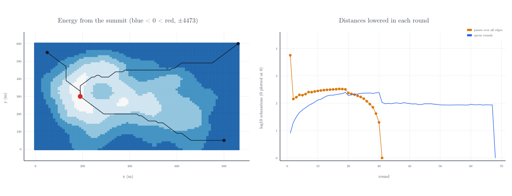
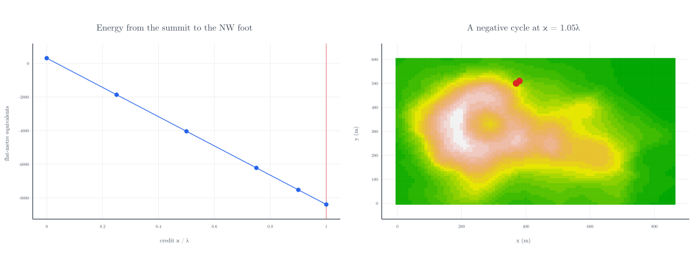

The Bellman–Ford Algorithm
Abstract
Bellman–Ford computes shortest paths when edge weights may be negative, and
detects the case where none exist because a negative cycle is reachable. We
derive it as a dynamic program over the number of edges in a path, prove that
\(n-1\) passes suffice without a negative cycle and that one more pass exposes
one, and compare the pass form with the queue form. The data is an e-bike energy
map of Maunga Whau. Climbing costs battery energy and regenerative braking
recovers some of it on the way down, so 38% of the 41,572 steps have negative
cost. A loop argument shows there is no negative cycle unless the recovery
exceeds the climbing cost, which would be a perpetual-motion machine. The same
argument gives a potential that lets Dijkstra's algorithm check every distance,
and the two agree to \(4\times10^{-12}\). Raising the credit just past the
climbing cost produces a negative cycle at once, a two-cell loop on the steepest
slope, and bellman_ford finds and returns it.
Shortest paths when weights can be negative
Take a directed graph with \(n\) vertices and weighted edges \((u,v,w)\), where \(w\) may be negative. The distance \(\delta(s,v)\) from a source \(s\) is the least total weight of a path from \(s\) to \(v\). Negative weights change two things.
First, greedy label setting breaks. Dijkstra's algorithm finalises the closest
unsettled vertex, on the grounds that any other route must pass through a vertex
at least as far away and can only get longer. A negative edge further on can
make it shorter, so a settled distance may be wrong. (algorithms::dijkstra
refuses negative weights for this reason.)
Second, a shortest path may not exist. If a cycle reachable from \(s\) has negative total weight, going round it once more always lowers the cost, and every vertex reachable from the cycle has \(\delta=-\infty\). An algorithm must detect this case rather than return numbers.
A dynamic program over path length
Let \(D_k(v)\) be the least weight of a walk from \(s\) to \(v\) with at most \(k\) edges, with \(D_0(s)=0\) and \(D_0(v)=\infty\) otherwise. The last edge of such a walk enters \(v\) from some \(u\), so
Bellman–Ford (Bellman 1958, Ford 1956, Moore 1959) evaluates this recurrence in place. One pass relaxes every edge, \(d(v)\leftarrow\min(d(v),d(u)+w)\). Doing it in place can only help, so after \(k\) passes \(d(v)\le D_k(v)\). Every value of \(d\) is also the weight of a real walk, so \(d(v)\ge\delta(s,v)\).
No negative cycle. Removing a cycle from a walk then never increases its weight, so some shortest walk is a simple path, with at most \(n-1\) edges. Hence \(\delta(s,v)\le d(v)\le D_{n-1}(v)=\delta(s,v)\): after \(n-1\) passes every distance is exact. More precisely, if every shortest path can be chosen with at most \(k\) edges, \(k\) passes suffice, and pass \(k+1\) changes nothing. The algorithm stops at the first pass that changes nothing.
A negative cycle. Suppose the cycle \(v_0,v_1,\dots,v_{m}=v_0\) is reachable, and no edge could be relaxed any more. Then \(d(v_{i})\le d(v_{i-1})+w(v_{i-1},v_i)\) for every \(i\), and summing round the cycle,
because both sums of \(d\) run over the same vertices and are finite. This is a
contradiction, so some edge can always be relaxed, and the \(n\)-th pass will
find one. Following the predecessor pointers back \(n\) steps from the vertex it
relaxes lands on the cycle, which bellman_ford returns as negative_cycle.
The cost is \(O(nE)\) in the worst case. algorithms::bellman_ford_queue is the
queue form (Moore 1959, often called SPFA). Each round examines only the
out-edges of vertices whose distance fell in the previous round. It computes the
same \(D_k\) and usually does far less work. It detects a negative cycle when
some predecessor chain reaches \(n\) edges.
An energy map of Maunga Whau
Negative weights arise wherever moving can earn something. An e-bike with
regenerative braking spends battery energy riding and climbing, and recovers
some of it on descents. dm::datasets::volcano() is the topography of Maunga
Whau, Auckland, on an \(87\times61\) grid of 10 m cells. We measure energy in
flat-metre equivalents, the energy to ride one metre on the flat, roughly 12 J
for a 100 kg rider and bike. A step to one of the 8 neighbours costs
with \(d\) the horizontal length. Lifting 100 kg by one metre takes 0.98 kJ,
about 1.2 kJ of battery energy, so \(\lambda=100\). The credit \(\kappa\) is the
energy recovered per metre of descent; regenerating about half of it gives
\(\kappa=0.5\lambda=50\). algorithms::terrain_energy_edges builds these 41,572
directed edges. Any step that drops more than \(d/\kappa\), 0.2 m per 10 m, has
negative cost.
Why there is no negative cycle, and a check on the answer
Around any closed loop, the height gained equals the height lost, \(A\). So a loop of length \(L\) costs
Energy recovered on a descent can never exceed what the climb cost, so there are no negative cycles. A credit \(\kappa>\lambda\) would be a perpetual-motion machine, and then a steep enough up-and-down loop has \(L<(\kappa-\lambda)A\) and negative cost.
The same observation gives an independent check. With the potential \(p(v)=\kappa z_v\), the reweighted cost \(c'(u,v)=c(u,v)+p(u)-p(v)\) is
which is never negative when \(\kappa\le\lambda\). The potentials cancel along any path, so \(\delta(s,v)=\delta'(s,v)-\kappa(z_s-z_v)\), and \(\delta'\) can be computed by Dijkstra's algorithm. This is Johnson's reweighting (Johnson 1977), with the potential handed to us by physics instead of found by a Bellman–Ford run.
Riding down from the summit
We start at the summit, so most cells are downhill and many distances are negative: the battery holds more on arrival than at the start.
#include <dm/dm.hpp>
namespace alg = dm::algorithms;
int main() {
std::filesystem::create_directories("build");
const double lambda = 100.0, kappa = 50.0;
const auto grid =
alg::terrain_from_frame(dm::datasets::volcano(), "x", "y", "elevation",
lambda);
const std::size_t n = grid.elevation.size();
const std::size_t summit =
std::ranges::max_element(grid.elevation) - grid.elevation.begin();
const auto edges = alg::terrain_energy_edges(grid, kappa);
const auto negative = std::ranges::count_if(edges, [](const auto &e) {
return std::get<2>(e) < 0;
});
const auto time_ms = [](auto &&f) {
const auto t0 = std::chrono::steady_clock::now();
auto r = f();
return std::pair{r,
std::chrono::duration<double, std::milli>(
std::chrono::steady_clock::now() - t0).count()};
};
const auto[bf, bf_ms] = time_ms([&] {
return alg::bellman_ford(n, edges, summit);
});
const auto[queue, queue_ms] = time_ms([&] {
return alg::bellman_ford_queue(n, edges, summit);
});
// Johnson check: Dijkstra on the reweighted costs, then undo the potential.
auto reduced = edges;
for (auto & [u, v, w] : reduced)
w = std::max(0.0, w + kappa * (grid.elevation[u] - grid.elevation[v]));
const auto[dj, dj_ms] = time_ms([&] {
return alg::dijkstra(n, reduced, summit);
});
double worst = 0.0, worst_queue = 0.0;
std::size_t below_zero = 0, deepest = 0;
for (std::size_t v = 0; v < n; ++v) {
const double johnson =
dj.distance[v] - kappa * (grid.elevation[summit] - grid.elevation[v]);
worst = std::max(worst, std::abs(bf.distance[v] - johnson));
worst_queue =
std::max(worst_queue, std::abs(bf.distance[v] - queue.distance[v]));
below_zero += bf.distance[v] < 0;
deepest = std::max(deepest, alg::shortest_path_to(bf, v).size() - 1);
}
std::print("Summit at ({:.0f} m, {:.0f} m), {:.0f} m high. {} cells, {} directed steps, {} with negative cost ({:.0f}%).\n\n",
grid.cell_size * (summit / grid.cols),
grid.cell_size * (summit % grid.cols), grid.elevation[summit], n,
edges.size(), negative, 100.0 * negative / edges.size());
std::print("| method | rounds | edges examined | negative cycle | time (ms) |\n| --- | ---: | ---: | --- | ---: |\n");
std::print("| Bellman–Ford, passes | {} | {} | {} | {:.2f} |\n", bf.passes,
bf.edge_checks, bf.has_negative_cycle ? "yes" : "no", bf_ms);
std::print("| Bellman–Ford, queue | {} | {} | {} | {:.2f} |\n",
queue.passes, queue.edge_checks,
queue.has_negative_cycle ? "yes" : "no", queue_ms);
std::print("| Dijkstra on reweighted costs | – | {} | – | {:.2f} |\n\n",
reduced.size(), dj_ms);
std::print("Largest difference from the Johnson check: {:.1e} (queue form: {:.1e}). The deepest shortest path has {} " "steps; the bound n − 1 is {}. {} cells ({:.0f}%) end with more energy than at the summit.\n",
worst, worst_queue, deepest, n - 1, below_zero,
100.0 * below_zero / n);
// Left: energy to reach each cell, with three shortest paths. Right: relaxations per round.
std::vector<double> xs, ys;
for (std::size_t i = 0; i < grid.rows; ++i)
xs.push_back(grid.cell_size * i);
for (std::size_t j = 0; j < grid.cols; ++j)
ys.push_back(grid.cell_size * j);
std::vector<std::vector<double>> z(grid.rows, std::vector<double>(grid.cols));
for (std::size_t c = 0; c < n; ++c)
z[c / grid.cols][c % grid.cols] = bf.distance[c];
const double extent =
std::abs(std::ranges::max(bf.distance, {}, [](double d) {
return std::abs(d);
}));
std::vector<dm::RGB> diverging = {{33, 102, 172}, {67, 147, 195},
{146, 197, 222}, {209, 229, 240},
{247, 247, 247}, {253, 219, 199},
{244, 165, 130}, {214, 96, 77},
{178, 24, 43}};
auto map =
dm::graphics::RPlot::create().image(xs, ys, z, diverging, -extent,
extent);
for (const std::size_t target : {std::size_t{80 * 61 + 5},
std::size_t{5 * 61 + 55},
std::size_t{86 * 61 + 60}}) {
std::vector<double> px, py;
for (const std::size_t c : alg::shortest_path_to(bf, target)) {
px.push_back(grid.cell_size * (c / grid.cols));
py.push_back(grid.cell_size * (c % grid.cols));
}
map.lines(px, py, "", dm::RGB{17, 24, 39}, 2.0).points(
{px.back()}, {py.back()}, "", dm::RGB{17, 24, 39}, 6.0);
}
map.points({grid.cell_size * (summit / grid.cols)},
{grid.cell_size * (summit % grid.cols)}, "",
dm::RGB{220, 38, 38}, 9.0).title(std::format(
"Energy from the summit (blue < 0 < red, ±{:.0f})",
extent)).x_label("x (m)").y_label("y (m)");
const auto rounds = [](const std::vector<std::size_t> & counts) {
std::pair<std::vector<double>, std::vector<double>> xy;
for (std::size_t k = 0; k < counts.size(); ++k) {
xy.first.push_back(static_cast<double>(k + 1));
xy.second.push_back(std::log10(std::max<std::size_t>(counts[k], 1)));
}
return xy;
};
const auto[kx, ky] = rounds(bf.relaxations_per_pass);
const auto[qx, qy] = rounds(queue.relaxations_per_pass);
auto work =
dm::graphics::RPlot::create().lines(kx, ky, "passes over all edges",
dm::RGB{217, 119, 6}, 2.0).points(
kx, ky, "", dm::RGB{217, 119, 6}, 5.0).lines(qx, qy, "queue rounds",
dm::RGB{37, 99, 235}, 2.0).y_limits(-0.1, 4.6).title("Distances lowered in each round").x_label("round").y_label("log10 relaxations (0 plotted at 0)");
dm::graphics::RLayout::create(1, 2).add(map).add(work).size(1250, 480).save_svg("build/bellman_ford_energy.svg");
}Summit at (190 m, 300 m), 195 m high. 5307 cells, 41572 directed steps, 15934 with negative cost (38%).
| method | rounds | edges examined | negative cycle | time (ms) |
|---|---|---|---|---|
| Bellman–Ford, passes | 31 | 1288732 | no | 3.03 |
| Bellman–Ford, queue | 68 | 42750 | no | 1.66 |
| Dijkstra on reweighted costs | – | 41572 | – | 2.62 |
Largest difference from the Johnson check: 3.6e-12 (queue form: 0.0e+00). The deepest shortest path has 73 steps; the bound n − 1 is 5306. 5306 cells (100%) end with more energy than at the summit.

The summit is 195 m high. With \(\kappa=50\), every downhill step earns energy, so every other cell is reached with more energy than at the start, up to 4,473 flat-metre equivalents (about 54 kJ) at the foot of the hill. The map is close to a contour map, because most of the energy is the potential term \(\kappa(z_s-z_v)\); the horizontal distance adds only a little. The three routes run straight down the slopes, and none of them climbs at all.
The pass form converged after 30 passes and confirmed it with a 31st that changed nothing, far fewer than the bound \(n-1=5{,}306\). The deepest shortest path has 73 steps, so the \(D_k\) argument alone would allow up to 74 passes. Fewer were needed because relaxing in place lets a pass carry a distance along several edges when they come in the right order: the first pass alone lowered over 5,000 distances. The queue form needs 68 rounds, since it moves exactly one edge per round, but it examines only 42,750 edges, against 1.29 million for the passes, a thirtieth of the work.
The Johnson check, Dijkstra's algorithm on the reweighted costs \(c'\), agrees with Bellman–Ford to within \(4\times10^{-12}\) at every cell, and the queue form agrees exactly. All three take under a millisecond on this machine.
Turning up the credit
We now vary the credit \(\kappa\) from 0 to \(1.5\lambda\) and run Bellman–Ford from the summit each time. Beyond \(\kappa=\lambda\) the loop argument above predicts negative cycles.
#include <dm/dm.hpp>
namespace alg = dm::algorithms;
int main() {
std::filesystem::create_directories("build");
const double lambda = 100.0;
const auto grid =
alg::terrain_from_frame(dm::datasets::volcano(), "x", "y", "elevation",
lambda);
const std::size_t n = grid.elevation.size();
const std::size_t summit =
std::ranges::max_element(grid.elevation) - grid.elevation.begin();
const std::size_t foot = 5 * grid.cols + 55; // the north-west foot
std::print("| \\(\\kappa/\\lambda\\) | negative steps | negative cycle | passes | queue edges examined | " "energy to the NW foot | cells below 0 |\n| ---: | ---: | --- | ---: | ---: | ---: | ---: |\n");
std::vector<double> ratio, to_foot;
std::vector<std::size_t> cycle;
double cycle_ratio = 0.0;
for (const double r : {0.0, 0.25, 0.5, 0.75, 0.9, 1.0, 1.05, 1.1, 1.25, 1.5}) {
const auto edges = alg::terrain_energy_edges(grid, r * lambda);
const auto negative = std::ranges::count_if(edges, [](const auto &e) {
return std::get<2>(e) < 0;
});
const auto bf = alg::bellman_ford(n, edges, summit);
const auto queue = alg::bellman_ford_queue(n, edges, summit);
if (bf.has_negative_cycle) {
std::print("| {:.2f} | {} | {} cells | {} | {} | – | – |\n", r,
negative, bf.negative_cycle.size(), bf.passes,
queue.edge_checks);
if (cycle.empty()) {
cycle = bf.negative_cycle;
cycle_ratio = r;
}
continue;
}
const auto below = std::ranges::count_if(bf.distance, [](double d) {
return d < 0;
});
std::print("| {:.2f} | {} | no | {} | {} | {:.0f} | {} |\n", r,
negative, bf.passes, queue.edge_checks, bf.distance[foot],
below);
ratio.push_back(r);
to_foot.push_back(bf.distance[foot]);
}
// Describe the first negative cycle found.
double length = 0.0, ascent = 0.0, cost = 0.0;
for (std::size_t k = 0; k < cycle.size(); ++k) {
const std::size_t a = cycle[k], b = cycle[(k + 1) % cycle.size()];
length +=
alg::terrain_step_cost(alg::TerrainGrid{grid.rows, grid.cols,
grid.elevation,
grid.cell_size, 0.0}, a, b);
ascent += std::max(0.0, grid.elevation[b] - grid.elevation[a]);
}
cost = length + (lambda - cycle_ratio * lambda) * ascent;
std::print("\nFirst negative cycle (κ/λ = {:.2f}): {} cells, length {:.1f} m, climb {:.0f} m, cost L + (λ − κ)A = {:.1f}.\n",
cycle_ratio, cycle.size(), length, ascent, cost);
std::vector<double> xs, ys, cx, cy;
for (std::size_t i = 0; i < grid.rows; ++i)
xs.push_back(grid.cell_size * i);
for (std::size_t j = 0; j < grid.cols; ++j)
ys.push_back(grid.cell_size * j);
std::vector<std::vector<double>> z(grid.rows, std::vector<double>(grid.cols));
for (std::size_t c = 0; c < n; ++c)
z[c / grid.cols][c % grid.cols] = grid.elevation[c];
for (const std::size_t c : cycle) {
cx.push_back(grid.cell_size * (c / grid.cols));
cy.push_back(grid.cell_size * (c % grid.cols));
}
cx.push_back(cx.front());
cy.push_back(cy.front());
auto map =
dm::graphics::RPlot::create().image(xs, ys, z,
dm::graphics::terrain_colors(20)).lines(cx, cy, "", dm::RGB{17, 24, 39}, 3.0).points(cx, cy, "", dm::RGB{220, 38, 38}, 9.0).title(std::format("A negative cycle at κ = {:.2f}λ", cycle_ratio)).x_label("x (m)").y_label("y (m)");
auto curve =
dm::graphics::RPlot::create().lines(ratio, to_foot, "",
dm::RGB{37, 99, 235}, 2.0).points(
ratio, to_foot, "", dm::RGB{37, 99, 235}, 6.0).abline_v(
1.0, dm::RGB{220, 38, 38}, 1.0).title("Energy from the summit to the NW foot").x_label("credit κ / λ").y_label("flat-metre equivalents");
dm::graphics::RLayout::create(1, 2).add(curve).add(map).size(1200, 460).save_svg("build/bellman_ford_credit.svg");
}| \(\kappa/\lambda\) | negative steps | negative cycle | passes | queue edges examined | energy to the NW foot | cells below 0 |
|---|---|---|---|---|---|---|
| 0.00 | 0 | no | 31 | 42804 | 308 | 0 |
| 0.25 | 15934 | no | 31 | 42780 | -1867 | 5274 |
| 0.50 | 15934 | no | 31 | 42750 | -4042 | 5306 |
| 0.75 | 15934 | no | 31 | 42532 | -6217 | 5306 |
| 0.90 | 15934 | no | 31 | 42108 | -7522 | 5306 |
| 1.00 | 15934 | no | 31 | 41572 | -8392 | 5306 |
| 1.05 | 15934 | 2 cells | 5306 | 11646582 | – | – |
| 1.10 | 15934 | 2 cells | 5306 | 15400781 | – | – |
| 1.25 | 15934 | 2 cells | 5306 | 15352576 | – | – |
| 1.50 | 15934 | 2 cells | 5306 | 14230132 | – | – |
First negative cycle (κ/λ = 1.05): 2 cells, length 28.3 m, climb 8 m, cost L + (λ − κ)A = -11.7.

The number of negative steps is the same, 15,934, for every credit from \(0.25\lambda\) up. The elevations are recorded in whole metres, so every descending step drops at least 1 m, and a credit of 25 per metre already outweighs the 10 m or 14.1 m of horizontal riding.
Up to \(\kappa=\lambda\) there is no negative cycle, the distances are finite and the pass count stays at 31. The energy to the north-west foot falls exactly linearly, from 308 to \(-8{,}392\), with slope \(-87\lambda\). The best route never climbs, so its cost is its length, 308 m, minus \(\kappa\) times the 87 m drop from the summit to the foot.
At \(\kappa=1.05\lambda\), five percent more than perpetual motion allows, Bellman–Ford finds a negative cycle at once. Every distance keeps falling, the algorithm runs all 5,306 passes, and the extra pass returns a two-cell loop: one diagonal step down an 8 m drop and back up. It costs \(L+(\lambda-\kappa)A=28.3-5\times8=-11.7\), exactly as the loop formula predicts. Every larger credit also gives a two-cell cycle. The queue form detects the cycle too, but only after examining 11.6 million or more edges, as distances spiral down until some predecessor chain is \(n\) edges long.
Summary
- Bellman–Ford evaluates the recurrence \(D_k(v)=\min(D_{k-1}(v),\min_u D_{k-1}(u)+w)\) in place; without a negative cycle \(n-1\) passes are exact, and a summing argument shows a reachable negative cycle always leaves an edge to relax.
- On the e-bike energy map of Maunga Whau, 38% of the steps are negative, yet a loop costs \(L+(\lambda-\kappa)A\), so there is no negative cycle while recovery is below the climbing cost.
- The potential \(\kappa z\) makes every reweighted cost non-negative, and Dijkstra's algorithm on the reweighted graph agrees with Bellman–Ford to \(4\times10^{-12}\).
- Only 31 of the 5,306 allowed passes were needed. The queue form
(
bellman_ford_queue) examined a thirtieth as many edges. - At \(\kappa=1.05\lambda\)
bellman_fordreports a negative cycle and returns it: a two-cell up-and-down loop costing \(-11.7\), a perpetual-motion machine on the steepest slope.
References
- Bellman, R. (1958). On a routing problem. Quarterly of Applied Mathematics 16, 87–90.
- Ford, L. R. (1956). Network Flow Theory. RAND Corporation paper P-923.
- Moore, E. F. (1959). The shortest path through a maze. Proceedings of the International Symposium on the Theory of Switching, 285–292.
- Johnson, D. B. (1977). Efficient algorithms for shortest paths in sparse networks. Journal of the ACM 24(1), 1–13.
- Cormen, T. H., Leiserson, C. E., Rivest, R. L. and Stein, C. (2009). Introduction to Algorithms, 3rd edition, Section 24.1. MIT Press.